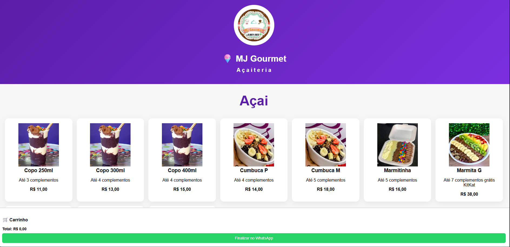

Desenvolvedor Front-End
focado em experiência do usuário
Crio interfaces modernas, rápidas e responsivas com foco em conversão e usabilidade.
Quem sou Eu ?
Que tal se conectar comigo nas redes sociais abaixo e saber mais sobre meu trabalho?


Desenvolvedor front-end apaixonado por tecnologia e soluções criativas
Minha jornada começou com a curiosidade de entender como os sites funcionam, o que me levou a estudar HTML, CSS e JavaScript. Desde então, tenho aprimorado minhas habilidades e me mantido atualizado com as últimas tendências e tecnologias do setor.
Adoro enfrentar desafios técnicos e encontrar soluções criativas para problemas complexos. Acredito que a colaboração é fundamental para o sucesso de qualquer projeto, e estou sempre aberto a aprender com outros profissionais da área.
Se você está procurando um desenvolvedor front-end dedicado e apaixonado para transformar suas ideias em realidade, estou aqui para ajudar!
Minha caixinha de ferramentas
Descubra as tecnologias e habilidades que utilizo para criar experiências digitais incríveis.
-

Desenvolvimento Web
Experiência em desenvolvimento front-end com foco em tecnologias modernas
-

Web Design
Experiência em design de interfaces e criação de layouts atraentes
-

Gerenciamento de Versões
Experiência em gerenciamento de versões com Git e GitHub
-

Responsividade
Experiência em criar layouts responsivos para diferentes dispositivos
Projetos em Destaque
Explore alguns dos meus projetos recentes que demonstram minhas habilidades em desenvolvimento web.
-

Gerenciador de tarefas
Um Site web para organizar e gerenciar tarefas diárias com funcionalidades de adicionar, completar, filtrar e excluir tarefas.
Ver Projeto → -

Cardápio Digital
Um cardápio digital interativo desenvolvido para facilitar pedidos online de forma simples, rápida e intuitiva. O projeto permite que o cliente monte seu pedido escolhendo sabores, coberturas, cremes e complementos, visualize o carrinho e finalize tudo diretamente pelo WhatsApp.
Ver Projeto → -

Previsao do Tempo
O projeto Previsão do Tempo permite consultar informações climáticas de forma simples e rápida. A aplicação utiliza uma API de previsão do tempo para exibir dados atualizados em tempo real.
Ver Projeto →